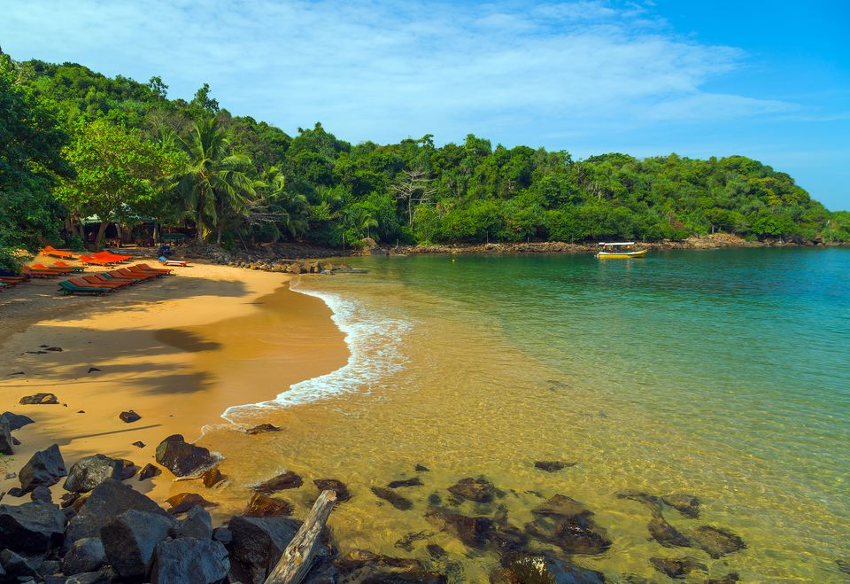

Sri Lanka | Jungle Beach
Located west to Unawatuna, Jungle Beach is a pretty bay nestled in a forested area. It is one of the secret gems of Sri Lanka which has everything to make your holiday experience one of its kind. The place retains its pristine natural charm as it is not ventured by a large number of tourists throughout the year due to its secluded location.
Jungle Beach offers a plethora of water sports such as snorkelling, scuba diving, swimming, boat ride and many more. The reefs jutting out of water a few metres offshore make a good site for snorkelling which introduces you to the exotic marine life of the region. Apart from schools of colourful fishes you will spot moray eels, encounter crabs, barracudas, trigger fish and many other reef dwelling creatures. The other activities you can indulge in Jungle Beach include whale watching, visiting historical ruins, jungle hiking and many more.
There are top notch resorts and cabins at Jungle Beach furnished with plush amenities and offering you a tranquil retreat amidst the jungle settings. The resorts and cabins have private walkways which will lead you to the calm shoreline caressed by the lapping waves of the Indian Ocean. You can savour traditional Sri Lankan cuisine in a communal restaurant or enjoy private dining on a beachside restaurant. In a nutshell, Jungle Beach is the place which awaits you to explore its hidden treasure and spend your vacation in style and luxury.